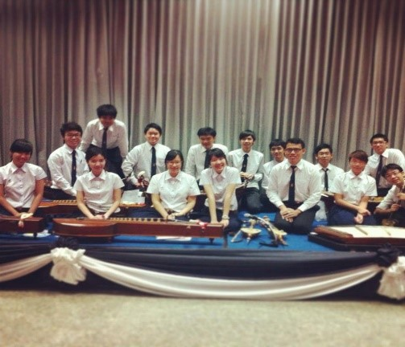
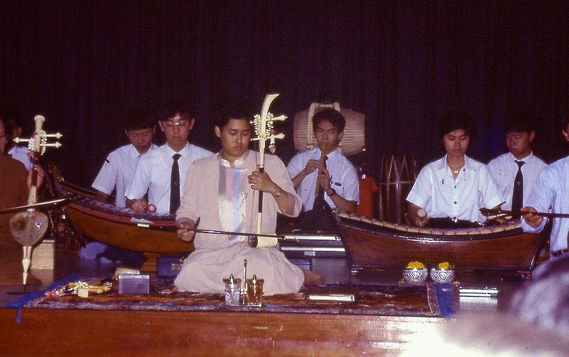

ปริญญาตรี หลักสูตรแพทยศาสตรบัณฑิต (พ.บ.) (Medical doctor)
ปริญญาโท หลักสูตรวิทยาศาสตรมหาบัณฑิต (วท.ม.)
ปริญญาเอก หลักสูตรวิทยาศาสตรดุษฎีบัณฑิต (วท.ด.)
ประกาศนียบัตรบัณฑิต ทางวิทยาศาสตร์การแพทย์คลินิก
คณะแพทยศาสตร์ จุฬาลงกรณ์มหาวิทยาลัย มี 21 ภาควิชา ได้แก่
ภาควิชากายวิภาคศาสตร์ (Anatomy) วิชาว่าด้วยโครงสร้างและหน้าที่ของร่างกายของมนุษย์โดยละเอียด รวมถึงโครงสร้างทางเซลล์ และเนื้อเยื่อ พันธุศาสตร์และความผิดปกติทางพันธุกรรมที่ก่อให้เกิดโรค
ภาควิชากุมารเวชศาสตร์ (Pediatrics) โรคและความผิดปกติในเด็ก การวินิจฉัยและการรักษาโรคในเด็ก
ภาควิชาจักษุวิทยา (Ophthalmology) โรคและความผิดปกติของตาและการมองเห็น การวินิจฉัยและการรักษาโรค การผ่าตัดบริเวณตา
ภาควิชาจิตเวชศาสตร์ (Psychiatry) ความผิดปกติทางจิตและปัญหาสุขภาพจิตในวัยต่าง ๆ การให้คำปรึกษาและการบำบัดจิต
ภาควิชาจุลชีววิทยา (Microbiology) วิชาว่าด้วยสิ่งมีชีวิตขนาดเล็กที่ก่อให้เกิดโรค เช่น แบคทีเรีย เชื้อรา ไวรัส กลไกในการก่อโรคของเชื้อ การตรวจหาและยับยั้งเชื้อโรค
ภาควิชาชีวเคมี (Biochemistry) วิชาว่าด้วยองค์ประกอบระดับโมเลกุลของร่างกาย สารอาหารกับร่างกายมนุษย์ เมตาบอลิซึมของมนุษย์และโภชนาการที่ดี
ภาควิชานิติเวชศาสตร์ (Forensic medicine) การตรวจทางนิติเวช เพื่อยืนยันสาเหตุของโรคและการกระทำที่มีผลทางกฎหมาย การชันสูตรพลิกศพ
ภาควิชาปรสิตวิทยา (Parasitology) วิชาว่าด้วยปรสิตที่มีความสำคัญทางการแพทย์ เช่น พยาธิ แมลง กลไกในการก่อโรคของปรสิต การตรวจหาและยับยั้งปรสิต
ภาควิชาพยาธิวิทยา (Pathology) วิชาว่าด้วยโรคและความผิดปกติของร่างกาย กลไกในการก่อโรค การตรวจเนื้อเยื่อเพื่อวินิจฉัยโรค
ภาควิชาเภสัชวิทยา (Pharmacology) วิชาว่าด้วยยา ข้อบ่งชี้ในการใช้ยาอย่างสมเหตุผล ผลของยา กลไกในการออกฤทธิ์ และอันตรกิริยาระหว่างยาแต่ละชนิด
ภาควิชารังสีวิทยา (Radiology) การใช้กัมมันตรังสีช่วยในการวินิจฉัยโรค และรักษาโรค การแปลผลทางรังสีวิทยา (เช่น X-ray, CT scan) มะเร็งวิทยา
ภาควิชาวิสัญญีวิทยา (Anesthesiology) การระงับความเจ็บปวดด้วยการใช้ยา การฝังเข็ม การเตรียมผู้ป่วยเพื่อการผ่าตัดและการคลอด การดูแลผู้ป่วยวิกฤต
ภาควิชาเวชศาสตร์ชันสูตร (Laboratory medicine) การตรวจทางห้องปฏิบัติการ การแปลผลทางห้องปฏิบัติการเพื่อการวินิจฉัยโรค การเก็บตัวอย่างจากผู้ป่วย
ภาควิชาเวชศาสตร์ป้องกันและสังคม (Preventive medicine) ระบาดวิทยาของโรค สถิติทางการแพทย์ การป้องกันและควบคุมโรค การสร้างเสริมสุขภาพที่ดี
ภาควิชาเวชศาสตร์ฟื้นฟู (Rehabilitation medicine) การฟื้นฟูผู้ป่วยหลังจากได้รับการรักษา ให้กลับมามีชีวิตที่ปกติ การฟื้นฟูระบบประสาท กระดูกและกล้ามเนื้อ การฟื้นฟูผู้สูงวัย
ภาควิชาศัลยศาสตร์ (Surgery) การผ่าตัดเพื่อรักษาโรคในระบบต่าง ๆ การผ่าตัดในผู้ที่เกิดอุบัติเหตุ การผ่าตัดด้วยการส่องกล้อง
ภาควิชาสรีรวิทยา (Physiology) วิชาว่าด้วยระบบการทำงานของร่างกายมนุษย์ หน้าที่ของระบบและความผิดปกติที่สำคัญต่อการดำรงชีวิต
ภาควิชาสูติศาสตร์-นรีเวชวิทยา (Obstetrics & Gynecology) โรคและความผิดปกติในสตรี ระบบสืบพันธุ์สตรี การตั้งครรภ์ การผดุงครรภ์ การคลอดบุตร
ภาควิชาโสต ศอ นาสิกวิทยา (Otolaryngology) โรคและความผิดปกติของหู คอ จมูก กล่องเสียง การวินิจฉัยและการรักษาโรค อาการนอนกรน โรคทางไซนัส
ภาควิชาออร์โธปิดิกส์ (Orthopedics) โรคและความผิดปกติทางกระดูกและข้อ เนื้อเยื่ออ่อน โรคจากการออกกำลังกาย ศัลยกรรมด้านกระดูกและข้อ
ภาควิชาอายุรศาสตร์ (Medicine) โรคและความผิดปกติทั่วไปของร่างกายมนุษย์ การวินิจฉัยและรักษาโรคโดยใช้ยาและอุปกรณ์อื่น ๆ
| น้ำหนักคะแนนที่ใช้ | กลุ่มสาระวิชาที่ต้องสอบ | เงื่อนไข | |||
|---|---|---|---|---|---|
| วิชา | น้ำหนัก | ||||
| O-NET 0% | วิทยาศาสตร์ | - |
|
||
| คณิตศาสตร์ | - | ||||
| ภาษาอังกฤษ | - | ||||
| ภาษาไทย | - | ||||
| สังคมศึกษา ศาสนา และวัฒนธรรม | - | ||||
| วิชาสามัญ 70% (จัดสอบโดย สทศ.) | วิทยาศาสตร์ (ฟิสิกส์ เคมี ชีววิทยา) | 40% |
|
||
| คณิตศาสตร์ 1 | 20% | ||||
| ภาษาอังกฤษ | 20% | ||||
| ภาษาไทย | 10% | ||||
| สังคมศึกษา | 10% | ||||
| วิชาเฉพาะ 30% |
|
||||
| องค์ประกอบ | ชื่อวิชา | ค่าน้ำหนัก (ร้อยละ) | เกณฑ์ผ่าน (ร้อยละ) |
|---|---|---|---|
| วิชาความถนัดทั่วไป | GAT (รหัส 85) ความถนัดทั่วไป | 30 | 30 |
| วิชาความถนัดทางวิชาชีพและวิชาการ | PAT1 (รหัส 71) วัดความถนัดทางคณิตศาสตร์ | 20 | 30 |
| PAT2 (รหัส 72) วัดความถนัดทางวิทยาศาสตร์ | 40 | 30 | |
| วิชาเฉพาะ (กสพท) | วิชาเฉพาะ ฉบับที่ 2 : แนวคิดทางจริยธรรม | 10 | 30 |
| รวม | 100 | 50 | |
ทั้งนี้จะใช้คะแนนจากการทดสอบ GAT, PAT1 และ PAT2 ครั้งที่ 1/2559 เท่านั้น และจะพิจารณาแต่ละโครงการแยกจากกัน
ติดตามรายละเอียดเพิ่มเติมได้ที่ admission.md.chula.ac.th หรือ www9.si.mahidol.ac.th
ฝ่ายศิลปวัฒนธรรม สโมสรนิสิตคณะแพทยศาสตร์ จุฬาลงกรณ์มหาวิทยาลัย ได้จัดกิจกรรมด้านศิลปวัฒนธรรมไทยอย่างต่อเนื่อง เช่น วงดนตรีไทย การรำไทย ขับร้องเพลงไทยเดิม งานวันศิลปวัฒนธรรม ศิลปะทัศนาจรเพื่อศึกษาวัฒนธรรมไทย
นอกจากนี้ ยังได้รับพระมหากรุณาธิคุณจากสมเด็จพระเทพรัตนราชสุดาฯ สยามบรมราชกุมารี เสด็จพระราชดำเนินมาทรงดนตรีร่วมกับนิสิตแพทย์จุฬาฯ ด้วย
 สโมสรนิสิตคณะแพทยศาสตร์ จุฬาลงกรณ์มหาวิทยาลัย (สพจ.) เป็นองค์กรในการดำเนินกิจกรรมของนิสิตแพทย์ในด้านต่าง ๆ แบ่งการดูแลออกเป็น 12 ฝ่าย ตามประเภทของกิจกรรม ได้แก่ ฝ่ายกีฬา ฝ่ายดนตรีสากล ฝ่ายถ่ายภาพและสื่อประสม ฝ่ายเทคโนโลยีสารสนเทศ ฝ่ายพัฒนาสังคมและบำเพ็ญประโยชน์ ฝ่ายวิเทศสัมพันธ์ ฝ่ายวิชาการ ฝ่ายวินัยและนิสิตสัมพันธ์ ฝ่ายศานติธรรม ฝ่ายศิลปวัฒนธรรม ฝ่ายสวัสดิการ ฝ่ายแสงเสียง นอกจากนี้ สโมสรนิสิตฯ ยังได้จัดตั้งชมรมขึ้น เพื่อให้ผู้มีความสนใจในกิจกรรมด้านเดียวกันมีพื้นที่ในการทำกิจกรรม เช่น ชมรมโต้วาที ชมรมความคิดสร้างสรรค์และการแสดงออกทางศิลปะ ชมรมลีลาศ เป็นต้น